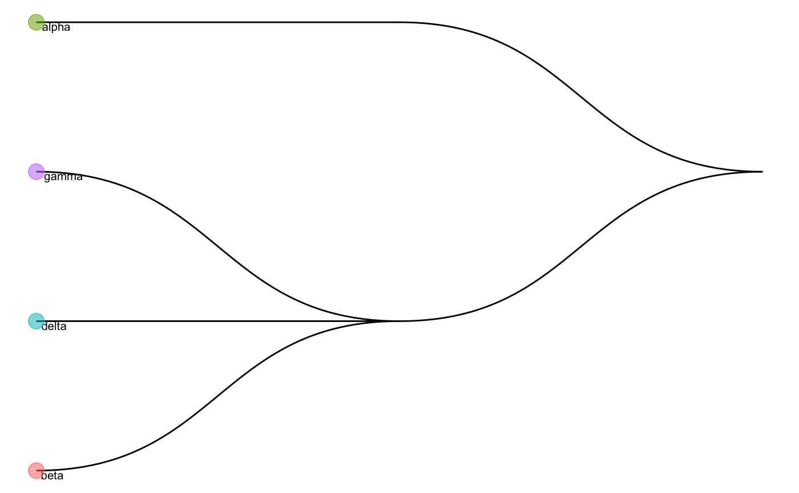

pretrainedModel.RmdThis vignette will provide an example showing how to use pretrained model we provided to predict cell types.
We assume that you have log-transformed (size-factor normalized) matrices where each row is a gene and each column a cell as a query dataset. For demonstration purposes, we will take a subset of single-cell pancreas datasets from one independent studies (Wang et al.).
load("data/scClassify_example.rda")
wang_cellTypes <- scClassify_example$wang_cellTypes
exprsMat_wang_subset <- scClassify_example$exprsMat_wang_subset
exprsMat_wang_subset <- as(exprsMat_wang_subset, "dgCMatrix")Here, we load our pretrained model using a subset of Xin et al. human pancreas as reference data.
First, check basic info of our pretrained model.
library(scClassify)
load("data/trainClassExample.rda")
trainClassExample
#> Class: scClassifyTrainModel
#> Model name: training
#> Feature selection methods: limma
#> Number of cells in the training data: 674
#> Number of cell types in the training data: 4In this pretrained model, we have select the genes based on Differential Expression using limma. To check the genes that are available in the pretrained model:
trainClassExample@features
#> [1] "limma"We can also visualise the cell type tree of the reference data.
plotCellTypeTree(trainClassExample@cellTypeTree)
Next, we perform predict_scClassify to predict the cell types of our query data matrix exprsMat_wang_subset_sparse, using our pretrained model trainRes = trainClassExample. Here, we used pearson and spearman as similarity metrics.
pred_res <- predict_scClassify(exprsMat_test = exprsMat_wang_subset,
trainRes = trainClassExample,
cellTypes_test = wang_cellTypes,
algorithm = "WKNN",
features = c("limma"),
similarity = c("pearson", "spearman"),
prob_threshold = 0.7,
verbose = TRUE)
#> Using parameters:
#> similarity algorithm features
#> "pearson" "WKNN" "limma"
#> [1] "Using dynamic correlation cutoff..."
#> [1] "Using dynamic correlation cutoff..."
#> classify_res
#> correct correctly unassigned intermediate
#> 0.704590818 0.249500998 0.000000000
#> incorrectly unassigned error assigned misclassified
#> 0.000000000 0.041916168 0.003992016
#> Using parameters:
#> similarity algorithm features
#> "spearman" "WKNN" "limma"
#> [1] "Using dynamic correlation cutoff..."
#> [1] "Using dynamic correlation cutoff..."
#> classify_res
#> correct correctly unassigned intermediate
#> 0.702594810 0.013972056 0.000000000
#> incorrectly unassigned error assigned misclassified
#> 0.001996008 0.277445110 0.003992016Noted that the cellType_test is not a necessarily input. For the dataset with unknown label, users can simply leave it as cellType_test = NULL.
Pearson as similarity metrics prediction results:
table(pred_res$pearson_WKNN_limma$predRes, wang_cellTypes)
#> wang_cellTypes
#> acinar alpha beta delta ductal gamma stellate
#> alpha 0 206 0 0 0 2 0
#> beta 0 0 118 0 1 0 0
#> beta_delta_gamma 0 0 0 0 20 0 0
#> delta 0 0 0 10 0 0 0
#> gamma 0 0 0 0 0 19 0
#> unassigned 5 0 0 0 75 0 45Spearman as similarity metrics prediction results:
table(pred_res$spearman_WKNN_limma$predRes, wang_cellTypes)
#> wang_cellTypes
#> acinar alpha beta delta ductal gamma stellate
#> alpha 0 206 0 0 0 2 2
#> beta 2 0 118 0 30 0 7
#> beta_delta_gamma 1 0 0 0 65 0 30
#> delta 0 0 0 10 0 0 2
#> gamma 0 0 0 0 0 18 0
#> unassigned 2 0 0 0 1 1 4sessionInfo()
#> R version 3.6.1 (2019-07-05)
#> Platform: x86_64-apple-darwin15.6.0 (64-bit)
#> Running under: macOS Mojave 10.14.6
#>
#> Matrix products: default
#> BLAS: /Library/Frameworks/R.framework/Versions/3.6/Resources/lib/libRblas.0.dylib
#> LAPACK: /Library/Frameworks/R.framework/Versions/3.6/Resources/lib/libRlapack.dylib
#>
#> locale:
#> [1] en_AU.UTF-8/en_AU.UTF-8/en_AU.UTF-8/C/en_AU.UTF-8/en_AU.UTF-8
#>
#> attached base packages:
#> [1] stats graphics grDevices utils datasets methods base
#>
#> other attached packages:
#> [1] scClassify_0.2.0
#>
#> loaded via a namespace (and not attached):
#> [1] Biobase_2.44.0 viridis_0.5.1 mixtools_1.1.0
#> [4] viridisLite_0.3.0 splines_3.6.1 ggraph_1.0.2
#> [7] RcppParallel_4.4.3 assertthat_0.2.1 stats4_3.6.1
#> [10] yaml_2.2.0 ggrepel_0.8.1 pillar_1.4.2
#> [13] backports_1.1.4 lattice_0.20-38 glue_1.3.1
#> [16] limma_3.40.6 digest_0.6.20 polyclip_1.10-0
#> [19] colorspace_1.4-1 htmltools_0.3.6 Matrix_1.2-17
#> [22] plyr_1.8.4 pkgconfig_2.0.2 purrr_0.3.2
#> [25] scales_1.0.0 tweenr_1.0.1 hopach_2.44.0
#> [28] ggforce_0.3.1 tibble_2.1.3 proxy_0.4-23
#> [31] mgcv_1.8-28 farver_1.1.0 ggplot2_3.2.1
#> [34] BiocGenerics_0.31.5 lazyeval_0.2.2 survival_2.44-1.1
#> [37] magrittr_1.5 crayon_1.3.4 memoise_1.1.0
#> [40] evaluate_0.14 fs_1.3.1 nlme_3.1-141
#> [43] MASS_7.3-51.4 segmented_1.0-0 xml2_1.2.2
#> [46] tools_3.6.1 minpack.lm_1.2-1 stringr_1.4.0
#> [49] S4Vectors_0.23.21 munsell_0.5.0 cluster_2.1.0
#> [52] compiler_3.6.1 pkgdown_1.3.0 proxyC_0.1.5
#> [55] pbmcapply_1.5.0 rlang_0.4.0 grid_3.6.1
#> [58] rstudioapi_0.10 igraph_1.2.4.1 labeling_0.3
#> [61] rmarkdown_1.15 gtable_0.3.0 roxygen2_6.1.1
#> [64] R6_2.4.0 gridExtra_2.3 knitr_1.24
#> [67] dplyr_0.8.3 commonmark_1.7 rprojroot_1.3-2
#> [70] desc_1.2.0 stringi_1.4.3 parallel_3.6.1
#> [73] Rcpp_1.0.2 tidyselect_0.2.5 xfun_0.9
#> [76] diptest_0.75-7